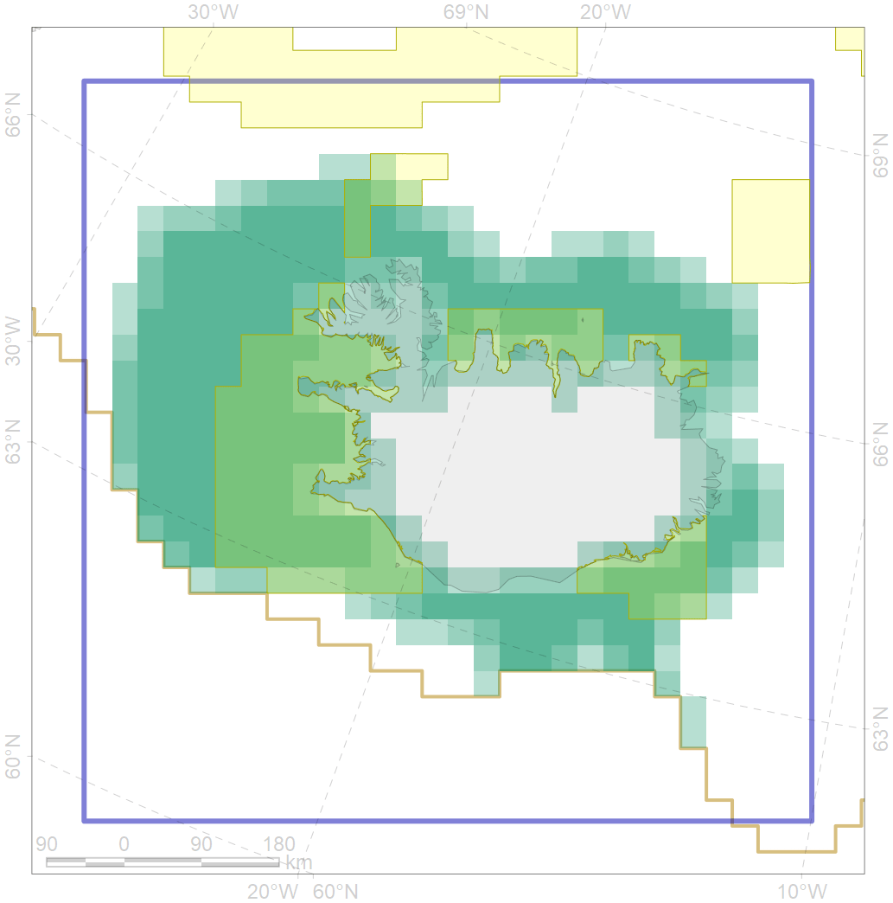
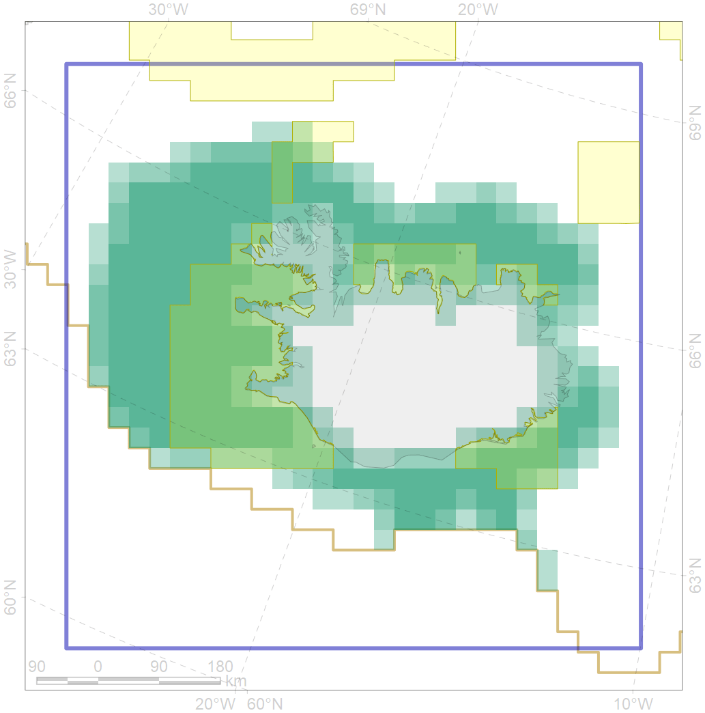

5055
 

| CF ID | 5055 |
| CF Name | Harbour porpoise feeding areas in Iceland |
| Time Period | 1986-2001 |
| Source(s) | NAMMCO; Pike et al 2009 |
| Seasonality | January-December |
| Depth Horizon | 0-200 |
| Methodology | Ship surveys |
| Author Name | Filatova |
| Notes | |
| Conservation Target Set in the Scenario | 0.06 |
| Conservation Target Achieved in the Scenario | 0.381 (Scenario: 634.9%) |
| PAC ID | Proportion in the PAC | Contribution to ArcNet Target Achievement | PAC’s Contribution to the Achieved Target |
|---|---|---|---|
| 37 | 1.8% | 16.7% | 2.6% |
| 38 | 23.8% | 332.3% | 52.3% |
| 39 | 4.6% | 67.1% | 10.6% |
| 40 | 1.1% | 13.0% | 2.0% |
| 41 | 4.7% | 45.2% | 7.1% |
| inner | 35.9% | 474.3% | 74.7% |
| outer | 63.9% | 160.6% | 25.3% |